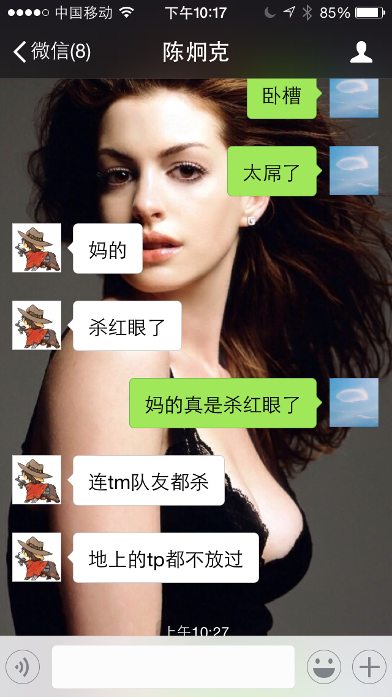
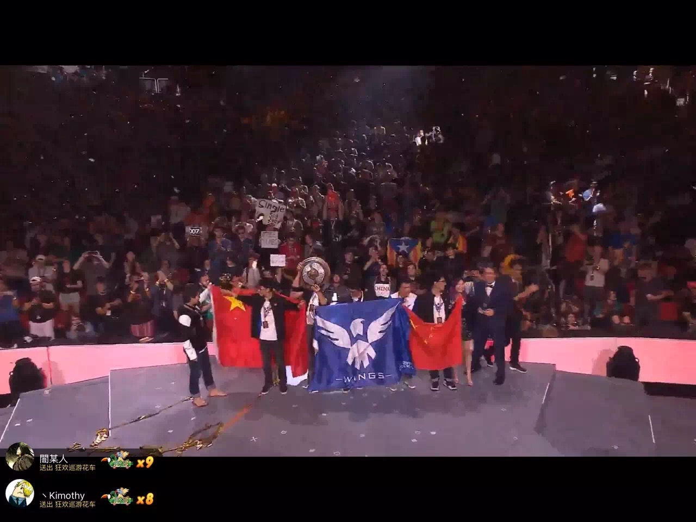

今天，TI6的总决赛在西雅图的贝纳罗亚音乐厅举行，wings用完美的表现击败了北美的DC战队、我从凌晨1:30开始一直在OB的解说房间关注着比赛，先是败者组的决赛，DC用强大的实力和丰富灵活的战术淘汰了卫冕冠军EG战队。总决赛拖拖拉拉一直到将近6点才开始。wings将野路子进行到底，四场比赛阵容完全不同，总共上场了18个英雄，印象里只有虚空和神谕出场了两次，第一把还玩起了屠夫，虽然玩嗨了第一把送了，但是后面三把越打越强，特别是第三把的一号位虚空，20杀0死17助的数据，无限被动晕，神挡杀神，佛当杀佛，追着对面pom和伐木机杀，杀红了眼还杀了自家的小强2次（冰龙大。。。）,最后一把拿出四保一的敌法阵容，靠着超强的团战和执行力，几波完美团追着DC一顿锤，看得我热血沸腾，特别是最后wings五人杀上DC的高地，五个人的气势势不可挡，打的DC落花流水，在DC的小鱼、pom和伐木机买活死后，打出GG，在OB众人的呐喊声和全场观众山呼海啸的wings的呼喊声中，wings终于赢得了冠军！
这是我看的第五届TI了，从当年TI2的IG败者组一路杀回打破navi神话夺冠，到ti3的中国军团雪崩和NV的世纪大战，ti4没什么印象~~~，以及TI5在杭州线下巨幕见证sumail封神蓝猫夺冠，每年夏天熬夜关注TI也成了我青春的一段热血回忆。今年我也结束了学生生涯，走上了工作岗位，成为了一名大数据工程师，TI6也许会是我看的最后一届TI了，这段时光多年后想起应该也会很热血吧。
最后放几张图片纪念一下这个热血的夜晚。






还有当年TI2和TI4那另人怀念的10个人。